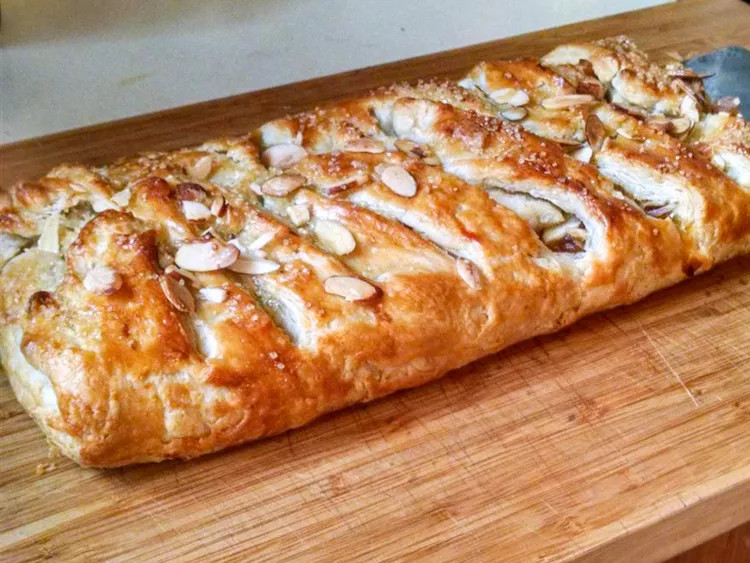

Danish Kringle

Description
Northern European pastry, a variety of pretzel. Pretzels were introduced by Roman Catholic monks in the 13th century in Denmark
From there they spread throughout Scandinavia and evolved into several kinds of sweet, salty or filled pastries, all in the shape of kringle.
Ingredients
- all-purpose flour
- salt
- cold butter
- sour cream
- an egg
- cream cheese
- chopped walnuts
- ground cinnamon
- sugar
- water
Steps
- Cut butter into sifted flour. Stir in sour cream, then cover the dough and chill it overnight.
- Mix softened butter, brown sugar, and some of the walnuts in a bowl. Set aside.
- Assemble, fill, and braid the kringle according to the detailed instructions in the recipe.
- Place on a prepared baking sheet and bake until golden brown.
Mix the confectioners' sugar and water, then drizzle the glaze over the cooled kringle.
- Sift flour into a large bowl. Cut in cold butter with 2 knives or a pastry blender until mixture is crumbly.
- Stir in sour cream and mix well to form a sticky dough. Cover dough tightly with plastic wrap and refrigerate for 8 hours to overnight.
Main page